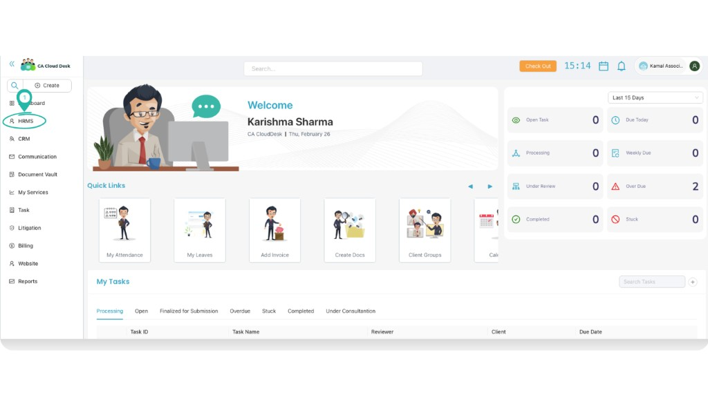
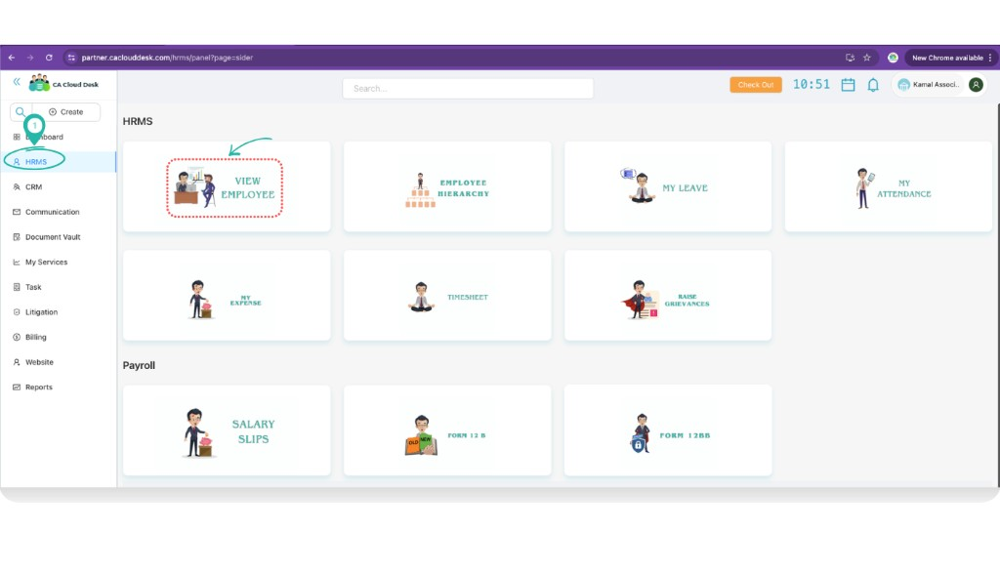
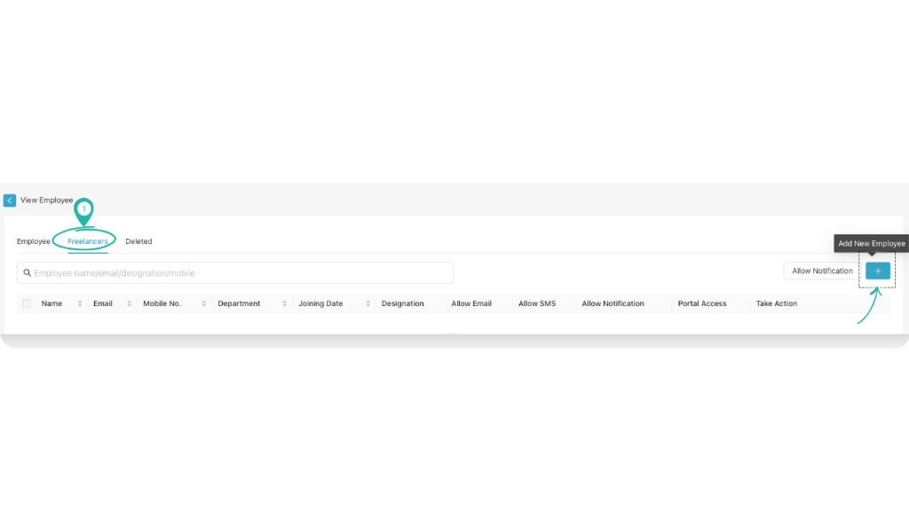
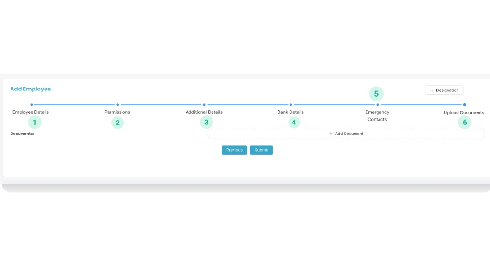
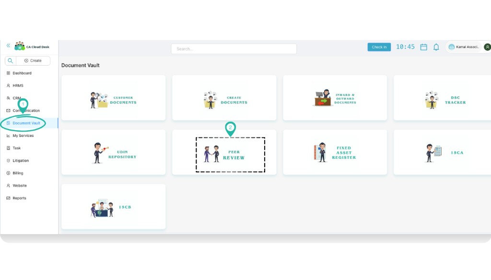
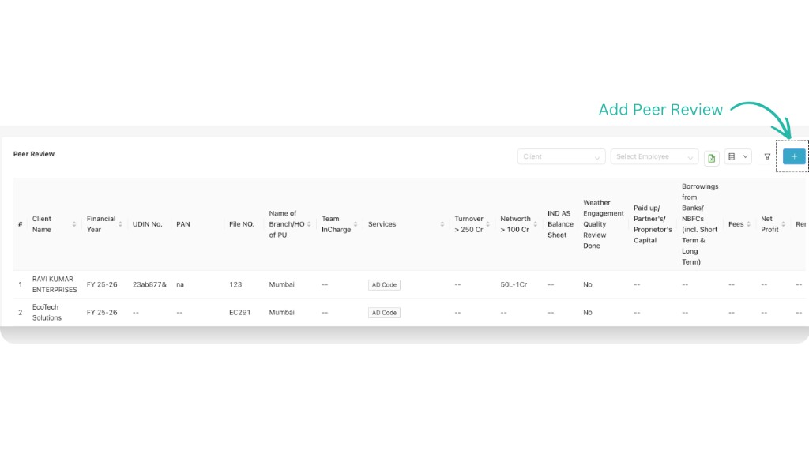
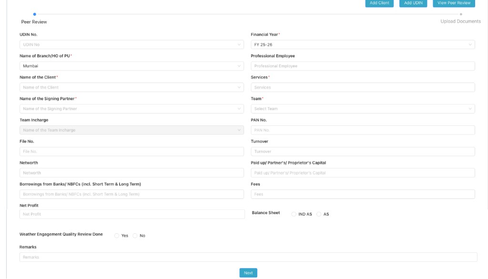
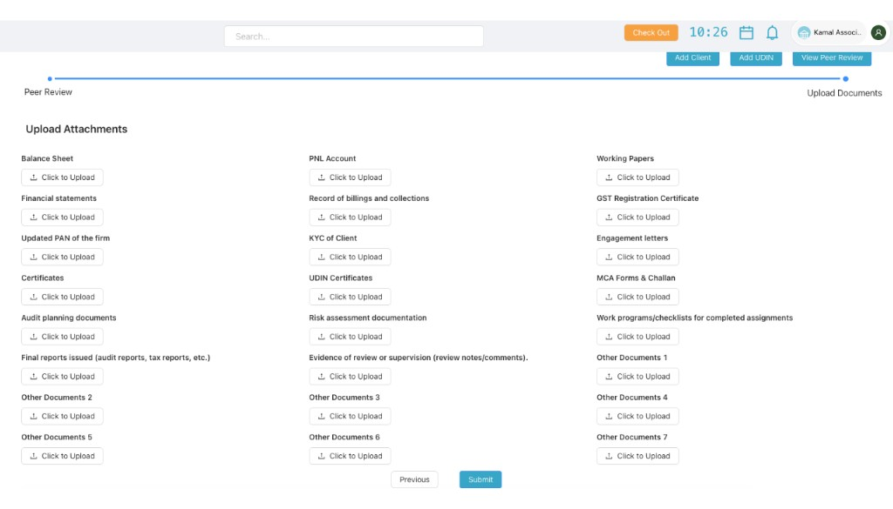

Peer Review (Document Vault)
Use Peer Review inside Document Vault to maintain a clean peer review record for each client/engagement: capture key details (UDIN, partner/team, financial year, turnover/net worth, etc.) and upload the working papers and supporting documents in one place.
Overview
In a CA firm, peer review is easiest when every engagement has one standardized record and all documents are uploaded in a fixed checklist. The Peer Review module does exactly that: your team can create a peer review entry, assign the Professional Employee / Team Incharge, and upload all relevant documents so the reviewer can check everything quickly.
Prerequisite: Add Professional Employee (Freelancer/Employee)
In the Peer Review form you will select a Professional Employee. This list comes from your HRMS employee records. If the person isn’t available in the dropdown, add them first from HRMS → View Employee.
- Login to CA Cloud Desk Partnerdesk and open HRMS from the left panel.
- On the HRMS screen, click View Employee.
- Open the Freelancers tab (or Employee tab, depending on what you are adding), then click the + icon to add.
- Fill the Add Employee form (Employee Details → Permissions → Additional Details → Bank Details → Emergency Contacts → Upload Documents) and click Submit.

Step 1 — From dashboard, select HRMS from the left panel.

Step 2 — HRMS screen: click View Employee.

Step 3 — View Employee: open Freelancers tab and click the + icon.

Step 4 — Add Employee wizard: complete all sections and submit.
AEmployee Details (fields)
- Employment Type: Employee / Freelancers
- Organization
- Name
- Employee Code
- Mobile No 1
- Email Id
- Mobile No 2
- Manager
- Department
- DOB
- Joining Date (example: 06/12/2023)
- Probation Period
- Branch
- Office
- Shift
- Team
- Gender
- Current Address
- Permanent Address
- Notice Period
- Status
- Allow Mobile Attendance
- Allow Desktop Attendance
- Allow Outside Radius
- Allow Face Recognition
BPermissions (common checklist)
- Manage Settings: Manage Settings, Manage Profile, View Profile, Customer Portal Policy, Task Settings, Create Branch, SMTP Configuration, Manage Notification, Billing Settings, Show & Modify All Task, Whatsapp
- Customer: Create Customer, View Customer, Edit Customer, Customer Delete/Inactive, Download Utility, Customer Group, Create/Delete Custom Field, View Customer Password, 15 CB Form, GST, Cases
- Employee: View Employee, Create Employee, Edit Employee
- Communication: Send SMS, Send Email, Send WhatsApp, Send Notification
- Services: Create Service Request, View Service Request, Manage Service, FAQ, Description
- Community: Access Community, My Offer, Transfer Work, Received Work, Chat, Create Post
- Tasks: View Task/Recurring Task, Create Task/Recurring Task, Task Customer, Update Task Stages, Task Stages, Create Task For Self, Create Task For Other, Delete Task/Recurring Task, Show Deleted Task, Task Action Buttons, Edit Task/Recurring Task
- Edit Task: Task Name, Task Assignee, Task Reporter, Task Consultant, Task Service, Task Target Date, Task Priority, Task Due Date, Task Description, Task Complete, Show Completed Task, Tags
- Documents: Create Documents, Delete Documents, View Documents, Share Documents, Add Documents, Add to Documents, Add Expiry, FAR View, FAR Add
- Billing: Access To Billing Dashboard, Add Invoice, View Invoice, Proforma Invoice, Receipts, CN & DN, Opening Balance, Reported Transaction
- HRMS: HR Management, Team Management
- Payroll: Payroll Basic, Verify Pay Details
- Report: Feedback report, Income report, Revenue report, Service Request report, Customer report, Task report, Partner report, Inward Outward report
- Lead Management: Lead Access, Lead Add
- Website
CAdditional Details
- EPF No.
- ESIC No.
- Aadhaar No.
- EID No.
- PAN No.
- DL No.
- Passport No.
- Blood Group
- Instagram URL
- Facebook URL
- Other Social Media URL
DBank Details
- Bank Name
- Branch Name
- Account Holder Name
- Bank Account No.
- IFSC Code
- IBAN No.
- Swift Code
- MICR Code
EEmergency
- Name
- Mobile 1
- Mobile 2
- Relationship
- Address
FUpload Documents
- Upload relevant ID proofs / letters / certificates as per your firm policy.
Open Peer Review
- From the left panel, click Document Vault.
- On the Document Vault screen, click the Peer Review card.

Document Vault — select Peer Review.
Peer Review List (Screen)
When Peer Review opens, you’ll see an engagement list in a table. You can filter by Client and Employee, and use the + icon to add a new peer review entry.

Peer Review list — use filters and click the + icon to add.
Add Peer Review Details
- Click the + icon on the Peer Review list page.
- Fill the peer review details form.
- Click Next to move to the document upload step.

Add Peer Review — fill engagement details and click Next.
Fields to fill (as shown in the form):
- UDIN No.
- Financial Year
- Name of Branch/HO of PU
- Professional Employee
- Name of the Client
- Services
- Name of the Signing Partner
- Team
- Team Incharge
- PAN No.
- File No.
- Turnover
- Networth
- Paid up/ Partner's/ Proprietor's Capital
- Borrowings from Banks/ NBFCs (incl. Short Term & Long Term)
- Fees
- Net Profit
- Balance Sheet: IND AS / AS
- Whether Engagement Quality Review Done: Yes / No
- Remarks
Upload Required Documents
After you click Next, the Peer Review module shows a checklist-style upload page. Upload the required documents and then click Submit.

Upload Documents — upload attachments under each heading and submit.
Typical uploads available on this screen:
Financial & Reports
- Balance Sheet
- PNL Account
- Financial statements
- Final reports issued (audit reports, tax reports, etc.)
- Record of billings and collections
- Net profit / fees support (as needed)
Compliance & Evidence
- UDIN Certificates
- GST Registration Certificate
- MCA Forms & Challan
- Updated PAN of the firm
- KYC of Client
- Engagement letters
Working Papers
- Working Papers
- Audit planning documents
- Risk assessment documentation
- Work programs/checklists for completed assignments
- Evidence of review or supervision (review notes/comments)
- Other Documents (1–7)
Outcome & Best Practices
After you click Submit:
- The peer review entry appears in the Peer Review list.
- You can use filters (Client / Employee) to quickly find the engagement later.
- All uploaded attachments remain linked to that engagement for audit/peer review reference.